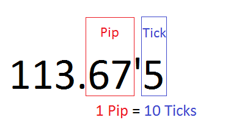
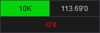
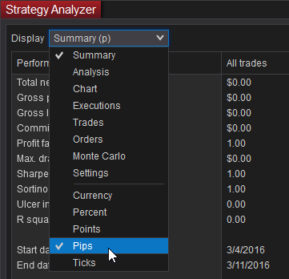
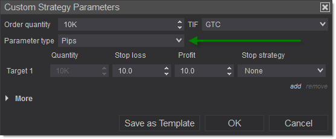
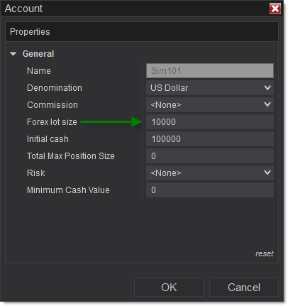
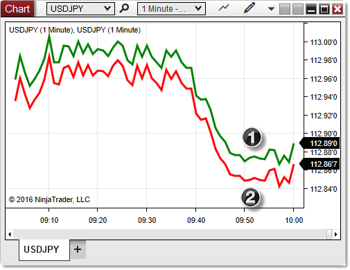
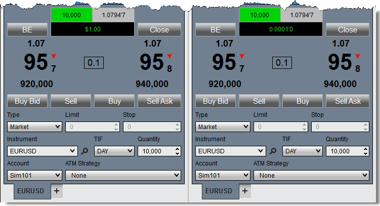
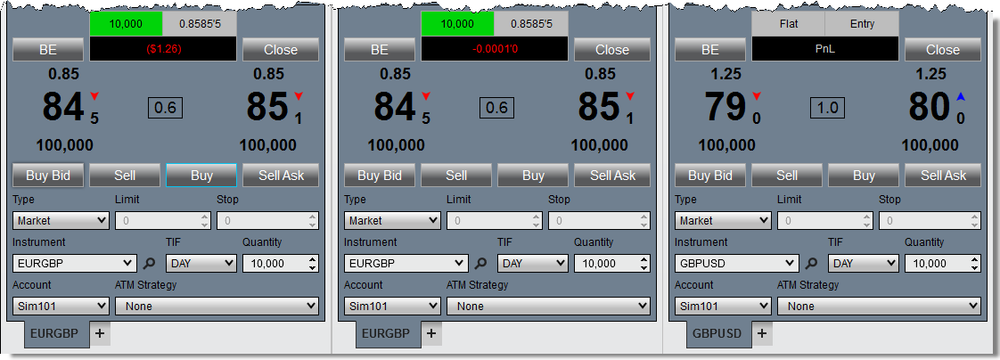

|
<< Click to Display Table of Contents >> Working With Forex |


|
Working With Forex
|
<< Click to Display Table of Contents >> Working With Forex |
|
NinjaTrader supports trading and viewing market data for spot forex pairs, in addition to other supported instrument types. Due to the unique nature of forex markets, there are a number of features throughout the platform tailored specifically to these instruments, and a few considerations to keep in mind when working with forex in NinjaTrader.
Pips vs. TicksThe "Pips" Calculation Mode can be used to calculate PnL and performance metrics throughout the platform. This mode allows you to tailor performance reporting specifically to your forex trades. Similar to the "Ticks" mode, "Pips" takes the lowest granularity of price movement for a forex instrument (called a tick in NinjaTrader), then divides it by 10 to arrive at the pip value for the instrument. For example, when viewing a USD/JPY quote of 113.67'5, the "7" would be the pip value, and the "5" would be the tick. Using the Pips Calculation Mode, the number of ticks in profit (the "5" in the example) will be divided by 10 to arrive at the number of pips of profit or loss.

Setting the Pips Calculation ModeThe Pips calculation mode can be used in realized/unrealized PnL fields in trading windows (Chart Trader, SuperDOM, Basic Entry, etc.), the Trade Performance window, and the Strategy Analyzer. In Trading Windows, the calculation mode can be changed by left-clicking within the PnL field, or by opening the window's Properties dialogue. For more information, see the relevant pages for each trading window.

In the Trade Performance window and Strategy Analyzer, the calculation mode can be changed via the Display dropdown menu, which affects all relevant statistics.
 |
ATM Strategy ParametersThe Parameter Type field within the ATM Strategy Parameters window can be changed to "Pips" to affect the way that stop loss and profit target prices are set by an ATM strategy. Just like the Pips PnL calculation mode, the Pips parameter type is based on a multiplicative factor of the Ticks parameter type (1 Pip = 10 Ticks). For example, rather than entering 200 ticks for your profit target (200 ticks = 20 pips), you can simply specify 20 pips.

|
Setting Your FX Lot SizeA "Forex Lot Size" property can be set for accounts shown in the Accounts tab of the Control Center. This setting affects the default position size populated in trading windows when a forex instrument is selected. To access this property, first select the Accounts tab in the Control Center. Next, right click on the account you wish to edit, and select the Edit Account menu item. In the window that appears, set the Forex Lot Size property to your desired value. You can enter any amount here, whether or not it corresponds to a standard position size (Lot, Mini-Lot, Micro-Lot). For example, you could enter "102000" to automatically use a position size equal to one standard lot (100,000) plus two micro lots (2,000).

|
 Forex-Specific Trading Windows
Forex-Specific Trading Windows
FX ProThe FX Pro window is laid out similarly to the Basic Entry window, with a few enhancements and modifications tailored specifically to forex instruments. For more information on using this window, see the FX Pro page.
FX BoardThe FX Board is a unique forex trading window featuring a grid of two-sided tiles updated in real time, offering market data, spread info, and order management functionality for multiple pairs at once. FX Pro and FX Board windows can be linked together via Instrument Linking. When linked, you can simply click any tile in the FX Board, and the corresponding instrument will be selected in a linked FX Pro window. For more information on using this window, see the FX Board page.
Other WindowsForex instruments can be traded in other windows, as well, and are not limited to the two mentioned above. Forex-specific windows can also be linked to others via Instrument Linking. Other windows, such as Chart Trader or the Market Analyzer, do not include forex-specific features, but are capable of handling FX instruments just like any others. |
 How Bars Are Built and Orders Filled
How Bars Are Built and Orders Filled
Building Bars with "Last Price" Data TypeForex price quotes do not use the concept of "Last Price" the same as other markets; only Bid and Ask quotes are available. Thus, when building bars using the default "Last" price type, the Bid price will be used instead. Using this price type, all bars on a chart will be built using Bid price updates, but you can choose to use the Ask price instead, if you wish. To change the price type used, first open the Data Series window on a chart, then toggle the value in the "Price Based On" field to your desired type.
Realtime Order Fills vs. BacktestingDue to the absence of a last traded price quote in forex, all Buy orders in a live market are filled at the Ask price, and all Sell orders are filled at the Bid. However, when backtesting NinjaScript strategies, all simulated order fills will occur at the Bid price, regardless of whether they were Buy or Sells orders

1.Ask Price: All realtime Buy orders are filled at the Ask 2.Bid Price: All realtime Sell orders and all backtest Buys and Sells are filled at the Bid
|
Forex Trading Hours TemplateAll forex instruments are configured to use the pre-defined "Forex" Trading Hours template, which runs 24 hours per day from 5:00pm EST on Sunday to 5:00pm EST on Friday, with an End-of-Day session break at 5:00pm each day. This covers the full range of forex trading throughout the week, but other Trading Hours templates can be applied to restrict the data on your charts to be in line with any local market timing on which you may wish to focus. For more information, see the Trading Hours page.
|
How to Calculate the Pip Value for a Forex PairMultiplying the pip size of your currency pair by the lot size of your order will provide you the pip value. This will be in the quote/counter currency of the forex pair. The quote/counter currency is the second currency in the pair.
Example in USD for an USD Quote/Counter CurrencyIn the following example we will do this for a 10,000 lot on the EURUSD. The quote/counter currency is USD and the EURUSD's point size is 0.0001. 10,000 x 0.0001 = 1 This indicates that 1 pip would be $1 USD.

Example in USD for a GBP Base CurrencyIn the following example we will use the EURGBP. Let's say our account is in USD and we want to convert the pip value to USD. Again we will say we are trading a 10,000 lot size and the pip value for the EURGBP is 0.0001. 10,000 x 0.0001 = 1 This indicates that 1 pip would be £1 GBP. We would then multiply this by what the GBPUSD is trading at. In this example the GBPUSD is trading at $1.26 (rounded). 1 x 1.26 = 1.26 This indicates that 1 pip would be $1.26 USD.

|